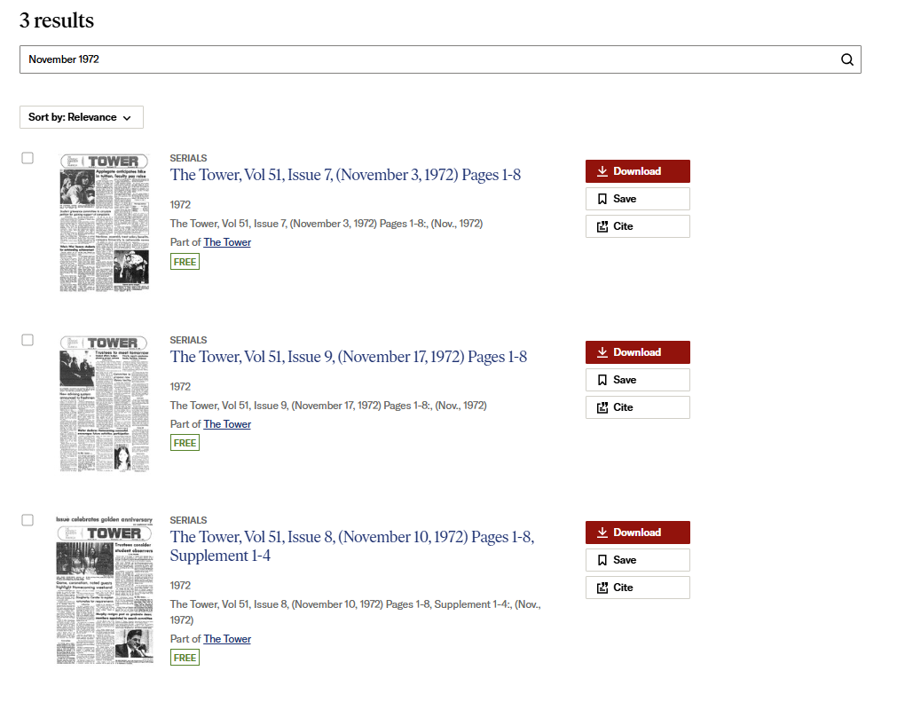
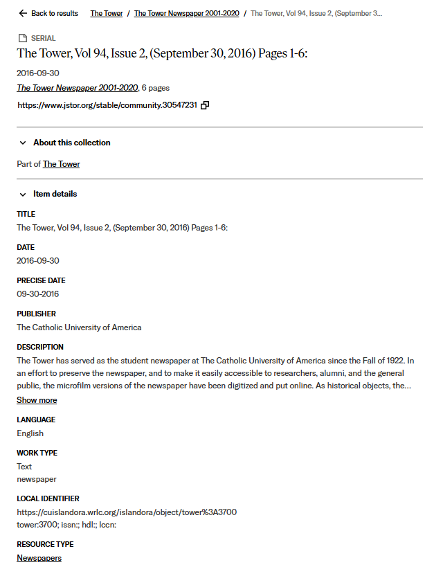
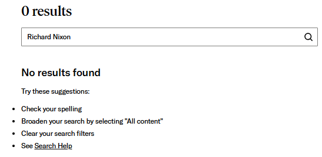
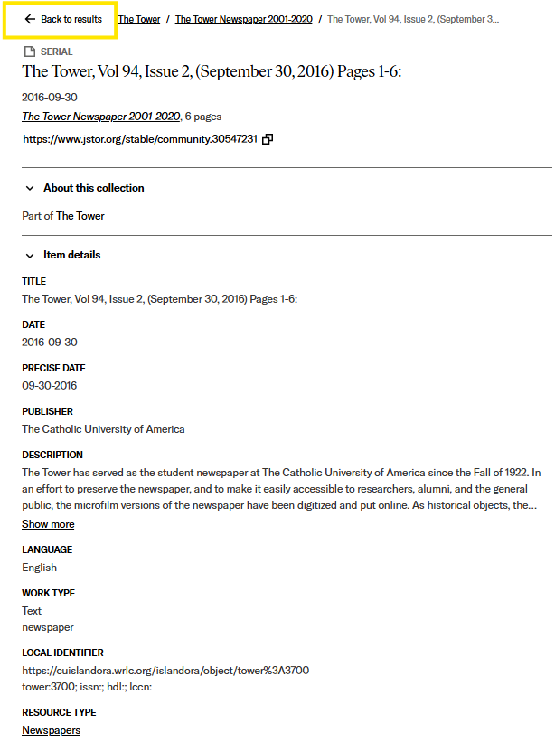

| Inputs | Outputs |
|---|---|
| Searching for “1936” within The Tower | 43 results; 2 pages.Results are newspaper issues, some from 2016 and 2015. Image preview of newspaper shown. |
| Selecting The Tower 1922-1940 | 498 items; 20 pages. Displays issues of the newspaper, beginning chronologically in 1922. Image preview of newspaper shown. |
| Searching for “Roosevelt” within The Tower 1922-1940 | No results found. |
| Searching for “1936” within The Tower 1922-1940 | 26 results; 2 pages. Sorted initially by relevance. Image preview of newspaper shown. |
The Tower Archive, and the JSTOR platform, emphasize functionality over ease and efficiency of use:
Users can easily keep track of where they are, and finding information is not difficult under certain conditions, the most significant being searching by dates.
This, as expected, corresponds to how physical newspapers work and how they can typically be browsed outside of digital platforms, meaning there is a match between the system and real world.
Users cannot easily leave unwanted states without their browser’s “back” button, though otherwise, users are free to browse as they wish.
The platform follows standard titling and dating for issues of the newspaper, meaning that users can easily get to issues as long as they know some parts of the date, volume number, or issue number.
In terms of error prevention, the site will inform users when their searches are incorrect or do not achieve results, though there is nothing to inform users that keyword searches will be ineffective.
Elements and options for browsing are visible, but limited, achieving a minimalist design in line with the JSTOR platform.
The site is not the most flexible or efficient, and it does not allow users to move between issues of the newspaper without exiting back to their previous search results.
Searching by dates is very functional; if a user knows what month and/or year they are looking for, it is very easy to find what they are looking for. For example, if someone is doing a research project about the Fall of 1970, they can easily search for and browse issues of the newspaper from the autumn months of 1970.
In my case, while looking for information about Richard Nixon, I went to November of 1972 to see if his re-election that year was mentioned:

I was able to find all of the November 1972 issues as well as an article on his victory:
JSTOR maintains a uniform appearance throughout the collection and achieves an aesthetically pleasing and minimalist design. Users who are familiar with JSTOR archives and digital collections should be able to navigate through this site very easily.
The archive does a good job of not overwhelming the user: the descriptions are sleek while the digitized content itself is emphasized:

Users are able to easily access standardized publication information in the above form on the left side of every serial issue.
Searching by keywords is not very useful as only some of the recent issues of the newspaper have their contents available to be searched. The vast majority of newspaper issues in this archive have not had any of their contents catalogued or recognized through OCR, and thus keyword searching is useless.
As an example, here are the search results from searching the same collection as above, by the keyword "Nixon".

As we know from above, articles on Nixon do appear within the newspaper collection; the failure of this search is not to be expected if keywords are viable for searching.
While the JSTOR interface is very minimalist and aesthetically pleasing, it is also quite clunky. There is no ability to move between issues of the newspaper sequentially, which would make a lot of sense given the necessity to search by date. Instead users are forced to use the "Back to results" button, which can be hard to see. This example uses the same JSTOR description featured above:

Users are forced into many situations such as this while navigating through the archive; they cannot move sequentially between issues or the larger collections of issues themselves without first exiting the collections altogether.
It can also be hard to keep track of which search bar searches what, whether it be the collections or all of JSTOR itself. This is yet another example of an interface that is pleasing to look at while frustrating to operate.
The results of the mini-usability test were very supportive of the conclusions drawn by my own heuristic analysis. One of the first things discovered in the usability test was the fact that keyword searches are ineffective. Thankfully, the tester was a graduate student of History, which meant that they were very familiar with dates and inclined to search by date regardless. In order to find information on WW2 and the Vietnam War, they were able to use his prior knowledge of historically significant dates such as Pearl Harbor or the Tet Offensive in order to find editions of the newspaper that might hopefully feature stories on these topics and how they related to contemporary campus attitudes.
Additionally, my tester wass very familiar with JSTOR and web browsing, and so was frequently opening extra tabs, closing them, and then re-opening them. We were able to discover some new issues with the platform simply because their methods of using the internet were a lot different from my own. For example, we found that the act of re-opening a newspaper issue does not also save and reopen your place, meaning that we were unable to easily return to stories they found interesting but had closed. My tester was additionally frustrated by how search results and the collection in general are, by default, sorted by title rather than date.
Ultimately, the heuristic review and usability test both confirmed the limitations of the date-focused organization of the Tower Archive. The usability test also presented new flaws of the system, such as technical limitations with sorting and reopening content.